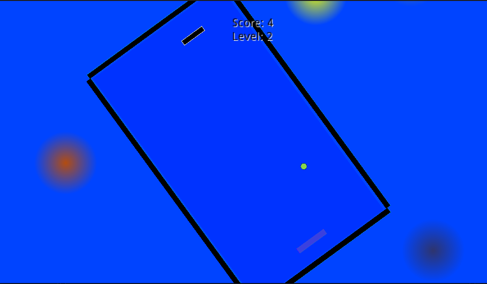
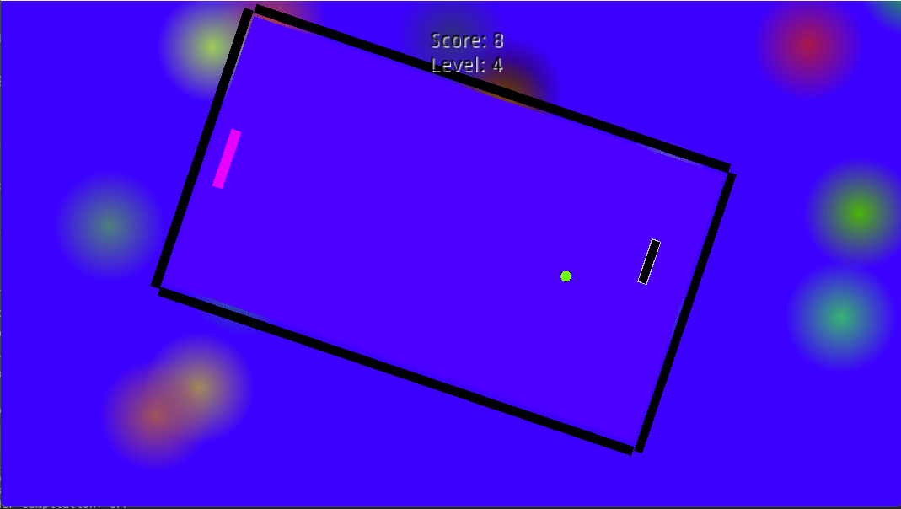

dallen72.github.io
Linkedin profile here
Game Projects:
Itch.io: Itch.io games here.
Made with Godot for a 1-month game jame in a team of 4. I was 1 of 2 developers and did most of the NPC AI, the voice acting and I made some adjustments to the gameplay. You can play it Here

Peace Pong
Made with Godot and hosted on Itch.io. A casual browser-game that can be accessed here : Peace Pong.


Morpheus
A top-down 2D game I was working on using Godot with a few other people.
The repository is privately hosted somewhere else but I contributed most of the source code.
Images of the game are shown in this repo:

I designed the menu from the background art that was given to me and coded a multiplayer lobby which was working in a LAN. We also had some gameplay mechanics working.